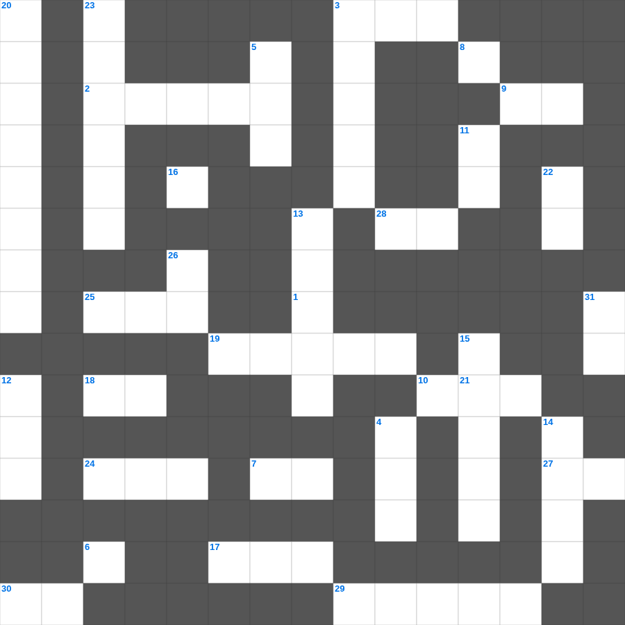

성경 지리 & 사물 마스터 100
📌 서비스 정의
십자가로세로는 교회 주보와 주일학교에서 사용할 수 있는 성경 기반 가로세로 퍼즐 서비스입니다. 성경 인물, 사건, 핵심 구절을 바탕으로 제작되었습니다. 온라인 풀이 및 인쇄 기능을 제공합니다.
성경의 말씀을 퀴즈로 배우는 성경 성경 퍼즐입니다. 가로 힌트와 세로 힌트를 보고 35개의 단어를 맞춰보세요. 인쇄도 가능하고 정답 확인도 바로 되니 소그룹 모임이나 가정 예배 시간에도 활용하실 수 있습니다.

📝 가로 힌트
1. 그런즉 우리는 몸으로 있든지 떠나든지 이것을 기쁘시게 하는 자가 되기를 힘쓰노라
2. 에베소 사람들이 숭배한 여신
3. 집과 재물은 조상에게서 상속하거니와 슬기로운 아내는 이것께로서 말미암느니라
7. 네 백성과 네 거룩한 성을 위하여 이것 이레를 기한으로 정하였나니
8. 왕이 보신 큰 신상의 머리는 순금이요 가슴과 두 팔은 이것이요
9. 묵시가 없으면 백성이 방자히 행하거니와 이것을 지키는 자는 복이 있느니라
10. 하나님이 말씀하신 '들소'가 너를 위하여 이것하겠느냐
16. 너는 하나님의 집에 들어갈 때에 네 이것을 삼갈지어다
17. 이방 여인 때문에 범죄한 이스라엘의 왕
18. 성막 입구의 방향
19. 계시록의 일곱 교회 중 첫 번째 교회
21. 아브라함의 아내
24. 야곱이 사랑한 막내 아들
25. 네가 지식을 버렸으니 나도 너를 버려 내 이것이 되지 못하게 할 것이요
27. 야곱의 가족들이 정착한 애굽의 땅
28. 게으른 자여 이것에게 가서 그가 하는 것을 보고 지혜를 얻으라
29. 사라가 죽었을 때의 나이
30. 너희는 세상의 빛과 이것이라
📝 세로 힌트
1. 에스더가 왕에게 구한 마지막 소원 '내 민족을 내게 이것하소서'
2. 건축을 방해하던 자들이 아닥사스다 왕에게 보낸 편지의 언어
3. 아달랴의 폭정 속에서 요아스를 숨겨준 제사장의 아내
4. 남유다 최악의 왕이었으나 바벨론 포로 중 회개하여 회복된 왕
5. 제2차 포로 귀환을 이끈 학자이자 제사장
6. 배와 넓적다리는 놋이요 그 종아리는 이것이요
11. 암몬 자손의 죄로 말미암아 그들을 심판하시되 그들의 왕과 이것들이 함께 잡혀가리라
12. 에스겔이 사로잡혀 간 나라
13. 너는 청년의 때에 너의 이것을 기억하라
14. 왕의 조서 중 에스라가 원하는 것을 거절하지 말라고 명령받은 직책
15. 빠른 경주자들이라고 선착하는 것이 아니며 이것들이라고 전쟁에 승리하는 것이 아니며
20. 베드로가 환상을 본 지붕
21. 우리의 신앙 고백문
22. 여호와께서 내게 주신 모든 이것을 내가 무엇으로 보답할까
23. 북이스라엘의 마지막 왕 이름
26. 에스더서의 마지막 장수
31. 요셉을 은 이십에 팔자고 제안한 유다
🧩 이 퍼즐에서 배우는 내용
이 퍼즐은 성경 지리 & 사물 마스터 100의 핵심 단어와 개념을 자연스럽게 복습할 수 있도록 구성되었습니다. 주일학교 수업이나 개인 성경공부에서 학습 내용을 점검하는 용도로 바로 활용할 수 있습니다.
🧑🏫 교회 교육 자료 활용
이 퍼즐은 주일학교 교재 추천 자료로 활용할 수 있고, 주일학교 주보에 넣기 좋은 분량으로 구성되어 있습니다. 수업용 주일학교 교안에 활동지로 붙이거나, 예배 후 복습용 주일학교 공과교재로 바로 사용할 수 있습니다.
🏷️ 키워드
성경 성경 퍼즐, 성경, 십자가로세로, 성경퀴즈, 말씀퀴즈, 가로세로퍼즐, 주일학교 교재 추천, 주일학교 주보, 주일학교 교안, 주일학교 공과교재